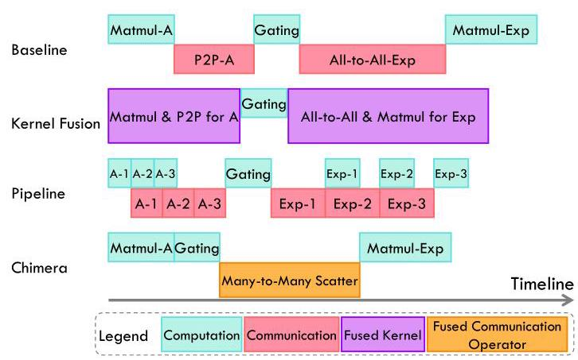
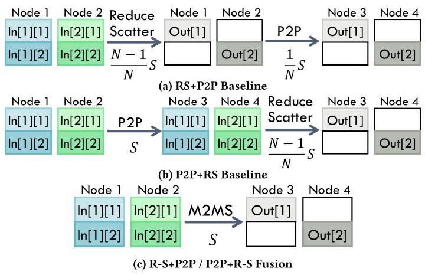
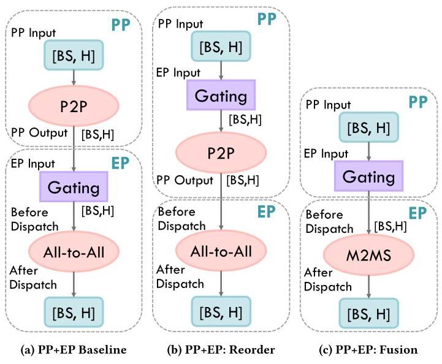
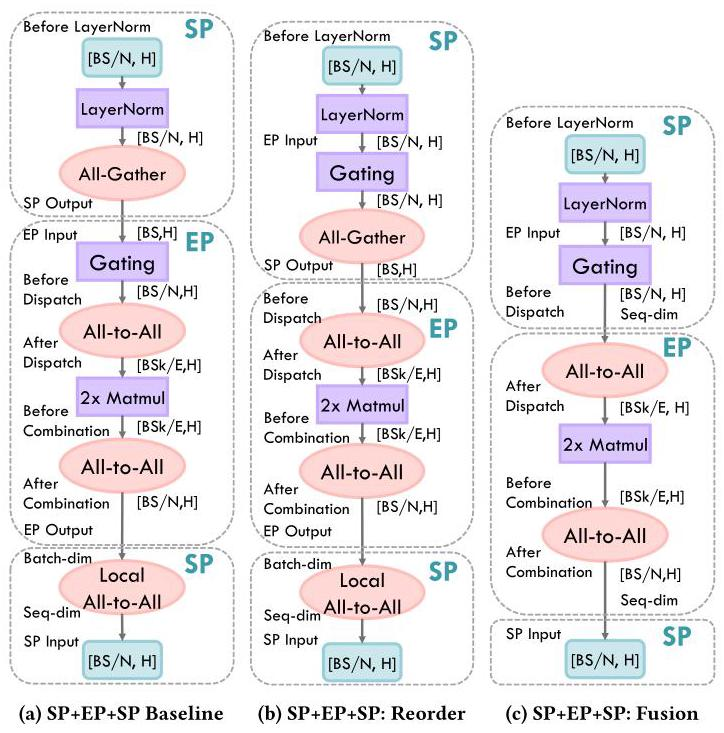
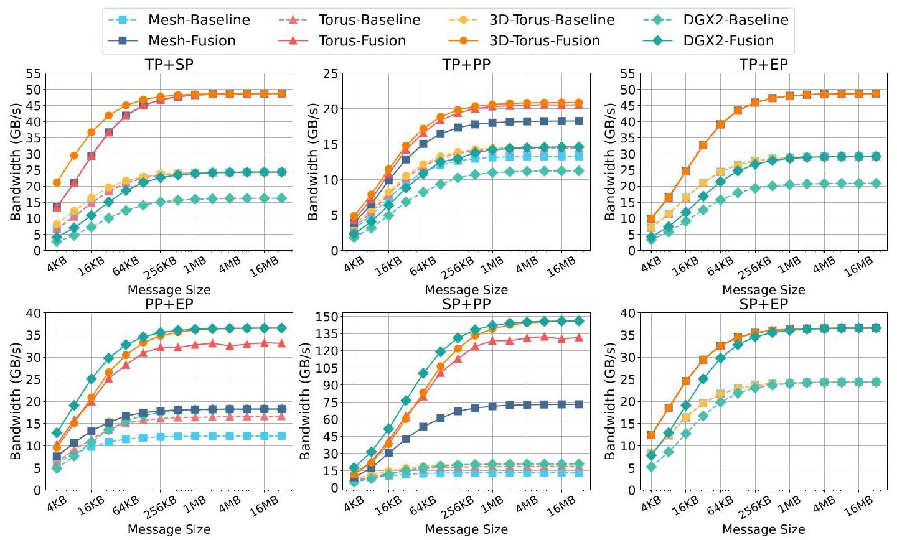
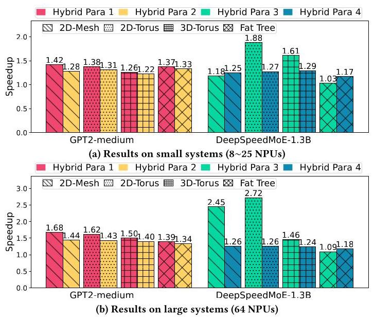
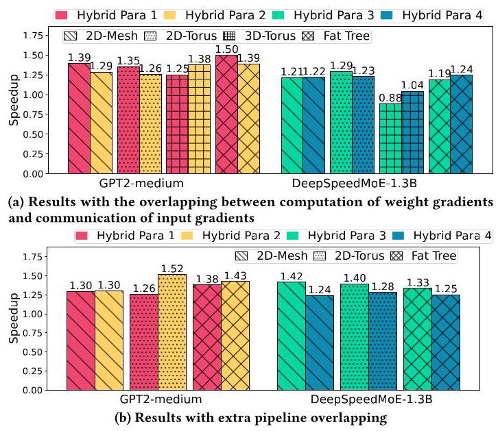
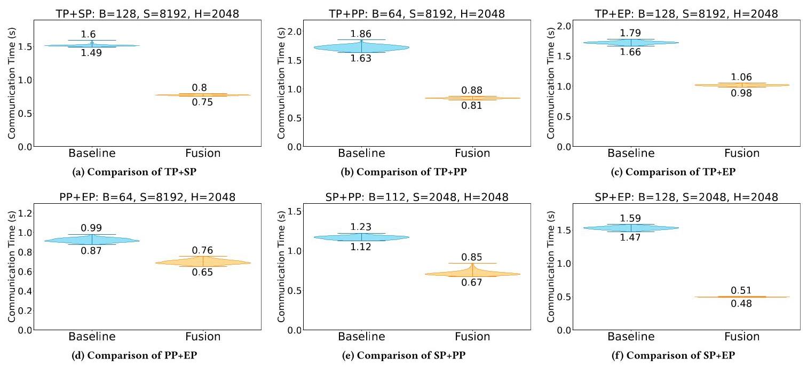

Chimera: Communication Fusion for Hybrid Parallelism in Large Language Models 深度解读
作者：Le Qin, Junwei Cui, Weilin Cai, Jiayi Huang
会议/年份：ISCA 2025
一句话总结：Chimera 把混合并行中相邻 parallelism 转换带来的冗余 collective communication 合并为更小的通信算子，从通信量本身减少 LLM 训练和推理中的通信瓶颈。
一、问题定义（Problem）
这篇论文关注的是 LLM 在多 NPU/GPU 集群上采用 hybrid parallelism 时的通信开销。LLM 模型越来越大，单个加速器放不下完整模型，也无法在可接受时间内完成训练或推理，所以系统会组合 data parallelism（DP）、tensor parallelism（TP）、pipeline parallelism（PP）、sequence parallelism（SP）和 expert parallelism（EP）。问题在于，不同并行方式在层与层之间切换时，会连续触发不同 collective communication，而这些通信通常是 blocking 的，计算必须等通信完成。
本文不是第一个发现“LLM 分布式训练通信很贵”的工作，但它切入了一个更具体的问题：已有系统常常为了让前一个 parallelism 得到“完整正确输出”而做同步，但后一个 parallelism 真正需要的只是某种输入布局。前一个同步结果可能马上被后一个并行模式重新切分、重排或路由，因此中间态的通信是冗余的。

Fig. 1 的价值在于把 Chimera 和已有方法区分开：kernel fusion 主要减少内存访问，pipeline scheduling 主要尝试 overlap computation and communication，而 Chimera 直接减少通信算子需要搬运的数据量。图中 PP+EP 的时间线显示，在通信占比很高时，仅靠 overlap 很难消掉瓶颈，因为最终仍要传同样多的数据。
动机评估：动机是 solid 的。论文先从 Megatron 的 TP+SP 和 S-LoRA 的通信简化中归纳出现有系统已经“偶然”利用过冗余通信，再把这个现象推广成一个系统性问题。Table 2 进一步给出常见 parallelism transition 的通信量和 real demand，占比可以低到 0%-66.7% 或 50%-66.7%，说明冗余不是边角优化。
核心 Insight：通信的目标不应被定义为“完成前一个 parallelism 的输出同步”，而应定义为“为后一个 parallelism 提供正确输入”。一旦把目标从中间态正确性改成最终输入需求，就可以把相邻通信算子融合为一个 redundancy-free operator。
二、相关工作（Related Work）
论文把相关工作组织成三条线。
第一类是 hybrid parallelism 框架和系统。Megatron-LM 支持 DP、TP、PP、SP，并已经在 TP+SP 中把 All-Reduce 简化为 Reduce-Scatter；DeepSpeed-TED 和 FasterMoE 等系统处理 MoE 的 tensor/expert/data 混合并行；Alpa 自动搜索 inter-operator 和 intra-operator 的并行切分；MegaScale 关注超大 GPU 集群上的混合并行训练。这些系统证明了混合并行是 LLM 系统的主流方向，但多数优化是面向特定组合或特定部署的经验式处理。
第二类是 kernel fusion。CoCoNet、Data Movement Is All You Need、以及 fused computation-collective operations 等工作把计算算子和通信算子融合，目标是减少数据在内存层级之间的读写，或者提升相邻计算/通信的执行效率。它们的不足在于没有改变 collective communication 的语义目标，也没有系统地消除 communication-communication 之间的冗余数据搬运。
第三类是 communication scheduling 和 collective algorithm。Centauri、Lancet、Themis、C-Cube 等工作通过切分通信、流水化、overlap 或 topology-aware scheduling 来减少可见通信时间。它们适合在已有通信量不变的前提下做执行调度，但如果中间通信本身就是冗余的，调度只能缓解，不能从根上减少需要传的数据。
Chimera 的定位因此比较清楚：它不是替代 kernel fusion、overlap scheduling 或 collective algorithm，而是在这些方法之前先改变图中的通信算子组合，降低后续优化面对的通信量。
三、技术挑战（Challenges）
挑战 1：如何定义“冗余通信”。 在分布式计算图中，每个 collective 都有局部正确性要求，不能简单删除。论文需要证明某些中间同步不是后续计算真正需要的状态，而只是前一个 parallelism 的惯性输出。
挑战 2：不同 parallelism 的通信模式差异很大。 TP 对应 All-Reduce，SP 对应 All-Gather，PP 对应 P2P，EP 对应 All-to-All，TP+PP 还可能用 M2MS+All-Gather。Chimera 要能覆盖这些组合，不能只为一个 case 写特化规则。
挑战 3：fusion 需要保持计算图等价。 如果两个通信算子之间夹着 computation operator，直接融合会改变依赖关系。论文选择只重排 MoE 中的 Gating，因为 Gating 只决定 token 去哪个 expert，不改变 activation value 本身，因此可以前移到 P2P 或 All-Gather 之前。
挑战 4：融合后的通信算子要可实现。 Chimera 不想引入大量新 collective，而是把 fused operator 落在 Reduce-Scatter、All-Gather、All-to-All、P2P、M2MS 这五类基本通信上。M2MS 尤其关键，因为多个组合的 fused form 都会变成 M2MS。
挑战 5：评估要覆盖泛化性。 如果只在一个 GPU 节点上跑一个 MoE case，很难证明方法通用。论文因此同时做仿真和真实机器实验，覆盖 2D Mesh、2D Torus、3D Torus、Fat-Tree、小规模和 64 节点规模、forward/backward 以及真实 8×RTX 4080 节点。
四、解决方案（Solution）
整体思路
Chimera 的机制可以概括为三步。
第一步，把 All-Reduce 拆成 Reduce-Scatter + All-Gather。这样做是为了暴露可融合的细粒度通信片段，因为 All-Reduce 常常包含一个后续 parallelism 不需要的 gather 或 scatter 中间目标。
第二步，在保持等价的前提下重排 computation operator。当前论文实际需要重排的是 MoE 的 Gating operator。Gating 负责根据 activation 计算 expert 选择，不改写 activation，因此可以移动到通信之前，让原本隔开的 P2P/All-Gather 与 All-to-All 变成相邻通信。
第三步，用 fused communication 替换相邻通信。论文在 Table 3 中列出五类基本通信的组合规则，例如 P2P+All-to-All 可以融合成 M2MS，All-Gather+All-to-All 可以融合成 All-to-All，All-Gather+Reduce-Scatter 可以直接变成 Zero。

Fig. 7 展示了 Chimera 的基本直觉：R-S+P2P 和 P2P+R-S 都是在把源节点数据搬到目标节点并完成对应切分，但两步执行会构造一个中间态。融合成 M2MS 后，源节点直接把各自需要的 chunk 发到最终目标，避免为了中间结果多走一轮同步。
贯穿示例
可以把一个 MoE 层前后的数据流看成“上一段流水线产生一批 token，下一段 expert layer 只关心每个 token 应该到哪个 expert”。传统执行会先用 PP 的 P2P 把整批 token 送到 EP 所在设备，再在 EP 内执行 Gating，然后 All-to-All dispatch 到专家设备。Chimera 的看法是：如果 Gating 不改变 token 值，只计算路由，那么它可以放在上一段流水线设备上先做。这样每个 token 的最终目的地已经知道，系统就不必先发到 EP 入口再二次分发，而是通过 M2MS 直接把 token 发到目标 expert。
这个例子串起了论文的三个核心点：冗余来自“先同步到中间布局”；重排的安全性来自 Gating 不改变 activation；融合后的通信目标是后续 EP 真正需要的 expert dispatch 输入。
关键技术点
通信开销建模。 论文把各 parallelism 的主要通信量抽象为 B、S、H、N 和 MoE top-k 的函数。TP 的 All-Reduce 开销是 2(N-1)BSH/N，SP 的 All-Gather 是 (N-1)BSH/N，EP 的 All-to-All 是 (N-1)BSHk/N，PP 的 P2P 和 M2MS 都按 BSH 计。这个模型不依赖具体拓扑，因此适合用来判断冗余通信的比例。
transition-level real demand。 Table 2 的核心不是列公式，而是把“当前两段通信量”和“真正需要的通信量”放在一起比较。例如 TP+SP 只需要 Reduce-Scatter，已有 Megatron 相当于把通信量降到 50%；PP+EP 的 real demand 可以只剩 BSH，因为 P2P 和 All-to-All 的组合可以被直接 M2MS 化；SP+PP 与 SP+EP 虽然尚未广泛出现在主流部署中，但也能从同一套分析得到可融合形式。

Fig. 8 是论文最重要的 case study。左图是 baseline：PP 结束后 P2P 到 EP 入口，Gating 后再 All-to-All；中图把 Gating 前移到 PP 侧；右图把 P2P+All-to-All 合成 M2MS。这个变化也带来一个实现含义：Gating 的部署位置从 EP 侧变成前一层所在 NPU。

Fig. 9 说明 Chimera 不只是两个通信算子的局部替换。SP+EP+SP 原本包含 SP 末尾 All-Gather、EP 内两次 All-to-All、以及 EP 输出转回 sequence dimension 的 local All-to-All。重排 Gating 并让 dispatch 直接按 sequence split 工作后，末尾 local All-to-All 可以消失，整个路径更接近后续 SP 所需的真实布局。
M2MS 的实现。 融合后很多场景落到 Many-to-Many Scatter。论文没有把它当作黑盒，而是用异步 point-to-point 组织 M2MS：每个源组节点按错开的目标顺序发送，结合 DOR 和等距路径随机方向路由，降低 one-to-many 或 many-to-one 争用。Fig. 11 用 2D torus 展示了这种分阶段发送方式。
与已有方案的对比
相比 kernel fusion，Chimera 不需要为不同计算形态定制 kernel，而是替换图中的通信算子。相比 overlap scheduling，Chimera 不依赖计算和通信能否重叠，也不要求把算子切成更细粒度 chunk。相比 collective algorithm 设计，Chimera 先减少通信语义上的数据量，后续仍可用已有算法优化 fused operator。
不足也比较明确：Chimera 的收益集中在 parallelism transition 上，对 DP weight update 阶段的 gradient All-Reduce 无能为力；它依赖计算图中存在可安全重排的 operator，目前论文实际展示的是 Gating；真实系统评估只覆盖单节点 8×RTX 4080，尚未证明在生产级多节点训练框架中端到端集成的工程代价。
五、实验评估（Experiments）
实验设定
论文的评估由四部分组成：synthetic effective bandwidth、link bandwidth sensitivity、end-to-end forward/backward simulation、真实机器 transition performance。
仿真部分使用 SCALE-Sim v2 估算计算时间，用 BookSim2 建模互连网络。加速器配置为 TPU-like：16 个 PE，每个 PE 是 256×256 systolic array，1 GHz，32-bit precision。网络覆盖 2D Mesh、2D/3D Torus、Fat-Tree，小规模包括 5×5 mesh、4×4 torus、2×2×2 3D torus、8×2 fat-tree，大规模扩展到 64 个节点。All-Reduce、Reduce-Scatter、All-Gather、All-to-All 使用常见 ring 或 halving-doubling 类算法，M2MS 用论文实现的异步 P2P 调度。
真实机器部分在一个 8×NVIDIA RTX 4080 节点上运行，PCIe 4.0×16，每张 GPU 标称 32 GB/s host transfer bandwidth，软件栈为 PyTorch 2.5.1、CUDA 12.4、NCCL 2.21.5。
主要实验与结论

Fig. 10 是 synthetic bandwidth 的核心结果。随着 message size 增大，fusion 和 baseline 都逐渐饱和，但 fusion 的饱和值明显更高。论文报告在饱和点处，TP+SP、TP+PP、TP+EP、PP+EP、SP+PP、SP+EP 的 effective bandwidth speedup 分别为 1.50-2.56×、1.26-1.43×、1.27-1.67×、1.23-2.65×、1.42-7.06×、1.49-1.50×。SP+PP 的上限特别高，原因不仅是通信量减少，也因为 fused M2MS 缓解了网络链路争用。
link bandwidth sensitivity 的结论是：Chimera 对链路带宽扩展呈较好的线性可扩展性。这个结果符合方法本质，因为它减少的是数据量；节点数扩展的效果则更依赖 fused communication 的调度策略和 collective algorithm 实现。

Fig. 12 评估 GPT2-medium 和 DeepSpeedMoE-1.3B 的 forward pass。小规模系统中，Chimera 对 GPT2 和 DeepSpeedMoE 的平均加速分别为 1.32× 和 1.34×；大规模 64 NPU 配置中，平均加速分别提升到 1.48× 和 1.58×。这说明通信 fusion 的收益能穿透到模型层面的 end-to-end latency，而不仅是 microbenchmark。

Fig. 13 说明 Chimera 在 backward pass 中仍有收益。第一种策略将 weight gradient computation 与 input gradient communication overlap，GPT2 和 DeepSpeedMoE 平均加速为 1.35× 和 1.16×；第二种 two-stage pipeline 同时 overlap communication and computation，平均加速为 1.36× 和 1.32×。这些数值低于某些 synthetic bandwidth speedup，说明在端到端 workload 中计算、非 transition 通信和调度开销会稀释 microbenchmark 收益。

Fig. 14 和 Table 6 是真实机器验证。各 transition 的平均加速分别为：TP+SP 1.96×、TP+PP 2.04×、TP+EP 1.69×、PP+EP 1.32×、SP+PP 1.63×、SP+EP 3.09×。其中 SP+EP 的真实加速最高，和 Table 2 中其冗余比例较高的分析一致。
结论支撑性分析
实验总体能支撑论文的核心 claim：Chimera 确实能减少 transition communication，并且收益在多种 topology、model、parallelism 组合和真实机器上都出现。尤其是 synthetic bandwidth、end-to-end simulation、real-node transition 三层证据互相补强，避免了只靠公式论证。
但实验也有边界。第一，end-to-end 结果主要来自模拟器，真实机器只测 transition performance，没有展示完整训练框架中 optimizer、scheduler、runtime graph rewrite 等工程开销。第二，真实机器是单节点 PCIe 系统，还不能完全代表多节点 InfiniBand/NVLink/NVSwitch 混合拓扑。第三，论文强调 Chimera 可用于 inference、fine-tuning 和 multimodal transformer，但实验主线仍集中在 GPT2 与 DeepSpeedMoE。
六、附加洞察（Side Findings）
结论 1：已有系统已经在局部做过“通信冗余消除”，但缺少统一抽象。
出处：Section 3.1，Fig. 5 和 Fig. 6。
推理链条：Megatron 的 TP+SP 把 All-Reduce 简化为 Reduce-Scatter，S-LoRA 通过重排 Add 让 All-Gather 被 All-Reduce 吞掉；这些优化都说明某些同步中间态并非必需；但它们来自人工观察和特定场景，因此论文进一步抽象为 parallelism transition 中的 communication redundancy。
结论 2：Gating 前移虽然保持数值等价，但会改变算子部署位置和数据布局。
出处：Section 4.2，Fig. 8。
推理链条：Gating 只基于输入 activation 计算 expert routing，不修改 activation value；所以它可以从 EP 侧移动到 PP/SP 侧；移动后 P2P/All-Gather 与 All-to-All 相邻，fusion 成为可能；代价是 runtime 需要在前一层所在 NPU 上执行 Gating，并接受新的数据布局。
结论 3：Chimera 对异构网络是正交优化，而不是拓扑特化优化。
出处：Section 6.2。
推理链条：很多异构网络优化是在 intra-node 和 inter-node 之间转移通信压力；Chimera 减少的是 semantic communication volume；因此即使不同层级带宽差异很大，减少要传的数据仍然有效；后续仍可叠加 topology-aware collective scheduling。
结论 4：Chimera 的收益不覆盖所有训练阶段。
出处：Section 6.1。
推理链条：训练包含 forward、backward 和 weight update；Chimera 优化的是 activation 或 input-gradient 在 parallelism transition 时的通信；如果 weight update 使用 DP All-Reduce 且旁边没有可融合通信，那么该通信无法被 Chimera 消除；因此论文的收益边界主要在 hybrid-parallel layer transition。
七、总结与评价（Wrap-up）
Chimera 的贡献在于把“混合并行通信优化”从执行层面的 overlap、kernel fusion、collective algorithm，推进到计算图语义层面的 communication-communication fusion。它通过定义 real demand，系统性识别 parallelism transition 中的冗余同步，并把相邻通信替换成更小的 fused operator。
这篇论文最大的亮点是问题抽象很干净：它没有为某个 MoE kernel 或某个拓扑写特化技巧，而是给出一张通信算子组合表，并在 PP+EP、SP+EP+SP 等 case 中展示如何落地。实验也比较完整，既有公式、仿真，也有真实节点测量。
最大的不足是系统集成深度还不够。Chimera 要在真实框架中稳定生效，需要 compiler/runtime 能识别 parallelism transition、验证 operator reorder 的等价性、生成 fused collective，并和已有 NCCL 或框架通信调度协作。论文证明了机制有价值，但离生产系统的自动化集成还有工程距离。
后续值得探索的方向包括：把 fusion 规则接入 Megatron/DeepSpeed/Alpa 的图优化器；在多节点 NVLink/InfiniBand 混合拓扑上验证 M2MS 的调度质量；把 fusion 与 computation-communication overlap 联合搜索，避免两类优化互相干扰。
八、章节脉络与段落速览（Structure Map）
- Abstract：提出 hybrid-parallel LLM 的通信瓶颈，并概括 Chimera 通过通信融合带来的 1.23-7.06× bandwidth speedup 与端到端加速。
- ¶1 说明 LLM 需要多 NPU 混合并行，但频繁 blocking communication 成为系统瓶颈。
-
¶2 概括 Chimera 的通信冗余识别、算子重排、fused communication 生成和主要性能结果。
-
Section 1 · Introduction：从 LLM 规模增长引出混合并行，再说明已有通信优化没有减少通信量本身。
- ¶1 说明模型参数和计算需求增长使单 NPU 不现实，多 NPU 并行成为必要。
- ¶2 介绍 DP、TP、PP、EP、SP 等并行模式及 hybrid parallelism 的形成原因。
- ¶3 指出 hybrid parallelism 面临通信模式复杂、blocking overhead 和通用优化困难两个挑战。
- ¶4 对比 kernel fusion 与 pipeline scheduling，指出它们没有从通信过程本身减少数据量。
- ¶5 提出 Chimera 通过 operator reordering 和 adjacent communication fusion 消除 transition redundancy。
-
¶6-8 列出三项贡献：识别冗余通信、提出 Chimera、在多系统与多模型上验证加速。
-
Section 2 · Background：定义论文后续使用的 LLM 结构、parallelism pattern 和 collective communication。
- 2.1 · Parallelism Patterns in LLM：介绍 Transformer/MoE 结构以及 DP、TP、PP、SP、EP 的计算与通信形态。
- ¶1 解释 Transformer block 和 MoE expert layer 的基本结构。
- ¶2 引出五种典型 LLM parallelism 并说明 Fig. 3 的符号约定。
- ¶3-7 分别说明 DP 无 forward 通信、TP 需要 All-Reduce、PP 需要 P2P、SP 需要 All-Gather、EP 需要两次 All-to-All。
-
2.2 · Collective Communication：定义 Reduce-Scatter、All-Gather、All-Reduce、P2P、All-to-All 和 M2MS。
- ¶1 说明 LLM 并行中频繁出现五类 collective 与 P2P。
- ¶2-5 用 Fig. 4 解释各通信模式的数据切分、聚合、点对点转发和 many-to-many scatter 语义。
-
Section 3 · Motivation：从已有自然优化中归纳冗余通信，并用通信量模型量化机会。
- 3.1 · Understanding Communication Redundancy：说明冗余来自为前一个 parallelism 同步输出，而不是为后一个 parallelism 准备真实输入。
- ¶1 提出从 communication volume 而非特定拓扑或算法角度寻找通用优化。
- ¶2 用 Megatron TP+SP 说明 All-Reduce 可以简化为 Reduce-Scatter。
- ¶3 用 S-LoRA 说明 Add 重排可以让 All-Gather 被省掉。
- ¶4 总结这些例子缺乏统一定义，并给出本文的 redundancy 解释。
-
3.2 · Modeling Communication Overhead：建立各通信模式和常见 transition 的开销模型。
- ¶1 用 Table 1 建模 TP、PP、SP、EP、R-S、M2MS 的每设备通信量。
- ¶2 用 Table 2 比较 common cascaded parallelism 的原始通信量与 real demand。
- ¶3 强调 TP+PP、TP+EP、PP+EP 等常用组合此前尚未系统识别这类冗余。
-
Section 4 · Chimera：给出通信融合方法和两个 case study。
- ¶1 说明本节先介绍通用 fusion 方法，再讲 LLM hybrid parallelism 的具体应用。
- 4.1 · Communication Fusion：提出 All-Reduce 拆分、Gating 重排、相邻通信替换三步。
- ¶1 解释拆分 All-Reduce、重排 computation operator 和生成 fused operator 的完整流程。
- ¶2 说明 Table 3 穷举五类基本通信的相邻组合及对应 fused communication。
- ¶3 用 Fig. 7 的 R-S/P2P 示例解释为何 M2MS 能避免中间态通信。
- 4.2 · Case Study I: PP+EP：通过前移 Gating 将 P2P+All-to-All 融合成 M2MS。
- ¶1 说明 baseline 中 Gating 隔开 P2P 与 All-to-All，重排后两者相邻。
- ¶2 解释 Gating 不改变 activation value，所以重排保持图等价。
- ¶3 指出 fused M2MS 消除 PP 输出同步冗余，但改变 Gating 的部署位置。
-
4.3 · Case Study II: SP+EP+SP：把 SP 与 EP 前后转换中的多次通信合并。
- ¶1 描述 baseline 包含 All-Gather、两次 All-to-All 和 local All-to-All。
- ¶2 说明重排 Gating 后可以直接按 sequence dimension split，从而删除 local All-to-All。
-
Section 5 · Evaluation：通过仿真和真实机器验证 Chimera 的 bandwidth 与端到端收益。
- 5.1 · Methodology：说明 SCALE-Sim、BookSim2、网络拓扑、collective algorithm 和 8×RTX 4080 真实平台设置。
- ¶1 概述四类实验目标：synthetic bandwidth、sensitivity、end-to-end、real system。
- ¶2-4 介绍加速器配置、网络拓扑、collective/M2MS 实现和真实机器软件栈。
- 5.2 · Synthetic Experiments：展示不同 transition 的 effective bandwidth speedup。
- ¶1 定义 parallel degree、message size 和 effective bandwidth。
- ¶2 报告六类 transition 在饱和点的 1.23-7.06× bandwidth speedup。
- ¶3 说明 link bandwidth sensitivity 呈较好线性扩展。
- 5.3 · End-to-End Performance：在 GPT2 与 DeepSpeedMoE 上评估 forward/backward pass。
- ¶1 描述 HP1-HP4 的 hybrid parallelism 组合。
- ¶2 报告 forward pass 在小规模与 64 NPU 大规模系统的平均加速。
- ¶3 报告 backward pass 在两种 overlap 策略下的平均加速。
-
5.4 · Real Performance：在真实 8×RTX 4080 节点上测试各 transition。
- ¶1 说明每个配置重复运行 100 次并用 violin graph 展示分布。
- ¶2 报告 Table 6 中 1.32× 到 3.09× 的平均加速范围。
-
Section 6 · Discussion：讨论适用场景、异构网络和与其他优化的关系。
- 6.1 · Application Scenarios of Chimera：说明 Chimera 适用于 training、inference、fine-tuning 和 transformer-based multimodal models。
- ¶1 区分 forward/backward 可优化通信和 weight update 中不可融合的 DP All-Reduce。
- ¶2 说明 prefill/decode 场景中长序列 SP 和 hybrid parallelism 也可受益。
- ¶3 扩展到 ViT、Qwen2.5-VL 等多模态长序列模型。
- 6.2 · Chimera on Heterogeneous Network：强调减少通信量对异构拓扑是正交收益。
- ¶1 说明 Chimera 不靠 intra/inter-node tradeoff，而是直接减少 volume。
- ¶2 指出它可与 heterogeneous communication optimization 继续叠加。
-
6.3 · Relationship with Other Work：比较 kernel fusion、scheduling、collective algorithms 与 Chimera。
- ¶1 概括已有三类优化各自的协同困难。
- ¶2-4 从操作对象、实现方式和目标三方面区分 Chimera 与 kernel fusion。
- ¶5 说明 Chimera 与已有方法兼容，fused operator 后续仍可继续 overlap 或算法优化。
-
Section 7 · Related Work：按领域回顾 hybrid parallelism、kernel fusion 和 communication scheduling。
- 7.1 · Hybrid Parallelism in LLM：总结 Megatron、DeepSpeed-TED、Alpa、MegaScale 等系统。
- 7.2 · Kernel Fusion：总结 CoCoNet 等 computation-communication fusion 工作没有探索 communication-communication fusion。
-
7.3 · Communication Scheduling：总结 Centauri、Lancet、Themis、C-Cube 等工作主要做 overlap 或 collective scheduling。
-
Section 8 · Conclusion：重申 Chimera 定义并消除 transition communication redundancy。
-
¶1 总结 Chimera 的通信融合机制和 1.23-7.06× bandwidth、1.16-1.58× end-to-end speedup。
-
Appendix A · Artifact Appendix：说明 artifact 的代码、环境、运行脚本和复现实验范围。
- A.1-A.2 概述 artifact 内容、运行环境、指标、磁盘和时间需求。
- A.3-A.5 说明 Zenodo/GitHub 获取方式、硬件软件依赖、安装和运行脚本。
- A.6-A.7 指出输出结果目录和 README 中的补充说明。